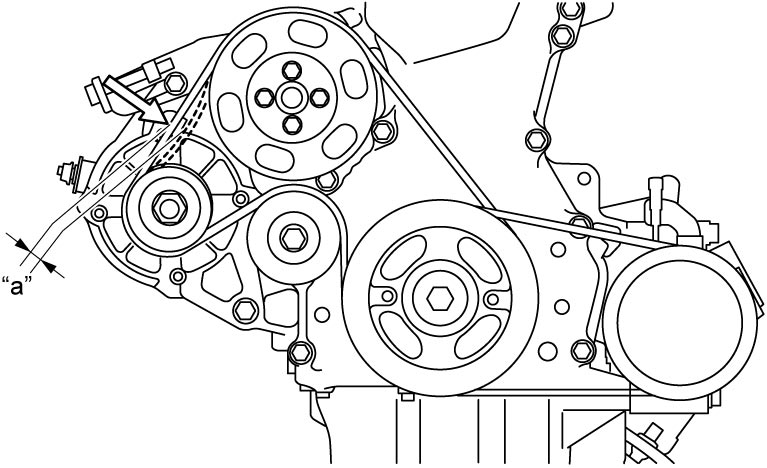
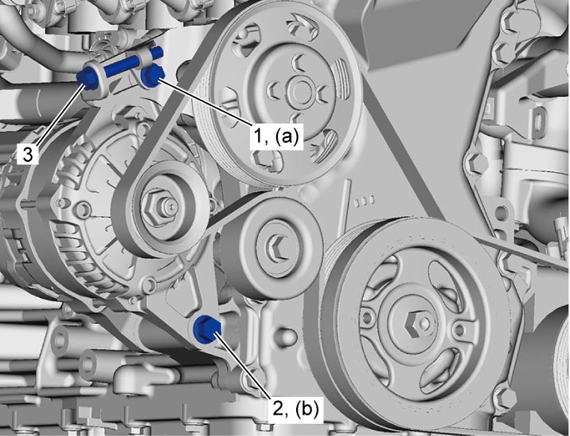

1J
| Water Pump / Generator Drive Belt Tension Inspection and Adjustment |
1)Check water pump / generator drive belt for crack, cuts, deformation, wear and cleanliness. If it is necessary to replace water pump / generator drive belt, refer to Water Pump / Generator Drive Belt Removal and Installation:K14C.
2)Check water pump / generator drive belt for tension. Water pump / generator drive belt is in proper tension when it deflects as follows under thumb pressure (about 100 N (10.2 kgf, 22.5 lbf).).
If belt tension is not as specified, go to next steps.

If belt tension is not as specified, go to next steps.
Water pump / generator drive belt tension
“a”
Existing belt:
4.9 – 5.6 mm (0.19 – 0.22 in.) as deflection / 100 N (10.2 kgf, 22.5 lbf)
New belt:
3.7 – 4.7 mm (0.15 – 0.19 in.) as deflection / 100 N (10.2 kgf, 22.5 lbf)

 "Expand image")
3)Loosen generator bolt (1), pivot bolt (2) and then adjust belt tension to specification described at Step 2) by loosening / tightening generator adjusting bolt (3).
4)Tighten generator bolt and pivot bolt to specified torque.
5)Check belt tension for specification after turning crankshaft two revolutions clockwise.

 "Expand image")